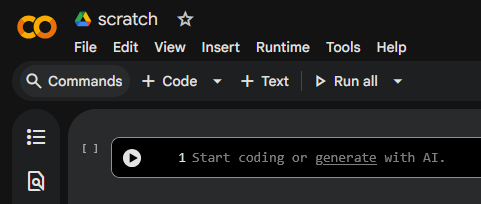

Colab
AI 101
What is Colab?
Colab is a hosted Jupyter Notebook service that requires no setup to use and provides free access to computing resources, including GPUs and TPUs. Colab is especially well suited to machine learning, data science, and education.
“Hosted”
- Colab is offered by Google.
- They want you to get used to using Google, so that more people use Google Cloud Platform, which is Google’s 2nd biggest revenue source (after advertising, ahead of Workspace)
- They run it on their cloud servers, so it doesn’t use resources on your computer (except to display results)
“Access to computing resources”
- Specifically, GPUs and a new Google-only device, TPUs
- More on the “T” latter
- This was the “more compute” that alongside “more data” has made the modern AI boom possible.
What is Colab?
Colab, or “Colaboratory”, allows you to write and execute Python in your browser, with
- Zero configuration required
- Access to GPUs free of charge
- Easy sharing
“Easy Sharing”
- You can save and share Colab documents in Google Drive, just like Google Documents, Spreadsheets, and Forms.
- We will take advantage of this shareability this term!
Like videos?
- Good for outside of class.
Whether you’re a student, a data scientist or an AI researcher, Colab can make your work easier. Watch Introduction to Colab or Colab Features You May Have Missed to learn more, or just get started below!
Getting started
- Navigate to https://colab.research.google.com/
- The document there is not a static web page…
- It is an interactive environment called a Colab notebook!
Make a New “Cell”
- Colab works in “cells” which are kind of like pages.
- You can make a new cell by clicking the “+ Code” button.
- Do so, and somewhere on your screen you will see the text:

Example
We can use Gemini from within Colab as follows:
- Tell Colab we want to use AI (only have to do this once, perhaps in one “cell”)
- Ask the AI to generate text in response to some prompt (you can do this as much as you like, possibly in many “cells”)
- But only after telling Colab to
import ai!
- But only after telling Colab to
Example
- Simply write the task
ai.generate_text, append an open paratheses(, type your prompt inside quotes"", and then add close parentheses). - The parentheses tell Python to take some action!
- The quotes tell Python it’s dealing with text and not the name of a command.
- We see the different color here - there will also be different colors for text and tasks in Colab.
Generate!
To see the response, select the cell with a click and then either press the play button to the left of the code, or use the keyboard shortcut “Command/Ctrl+Enter”.
You will have to “run” both the command to import ai (first) then the command to generate text.
- Try finding the capital of Wakanda or Narnia!
- Try telling Colab to play the imitation game!
Create!
To create a new Colab notebook you can…
- Use the File menu on https://colab.research.google.com/, or
- Use the following link: http://colab.research.google.com#create=true.
Learn more!
- Colab is an outgrowth of a major scientific computing project called Jupyter.
- We won’t dwell on it much this term
- Computer scientists: the “py” stands for Python
- Data scientists: the “r” stands for R.
Learn more!
- Colab notebooks are Jupyter notebooks that are hosted by Colab. To learn more about the Jupyter project, see jupyter.org.
- I think Jupyter is a bit out-of-scope this term, but Colab is too useful not to use, so it will be our home to explore AI this term!
Understanding Colab
Notebooks
A Colab notebook is a list of cells.
- List here means ordered - they don’t all happen at once.
- Cells, we recall, are “like pages”
Cells
Cells contain either explanatory text or executable code and its output. Click a cell to select it.
- We can either write notes about what we are doing, or
- Call Gemini or do some other task.
I think of these as basically being nouns (text) or verbs (tasks for Google).
Code cells
- Once the toolbar button indicates CONNECTED (to Google’s servers that do all the work), click in the cell to select it and execute the contents in the following ways:
- Click the Play icon in the left gutter of the cell;
- Type Cmd/Ctrl+Enter to run the cell in place;
- Type Shift+Enter to run the cell and move focus to the next cell (adding one if none exists); or
- Type Alt+Enter to run the cell and insert a new code cell immediately below it.
Example
- Below is an example of something we can put in a code cell.
Text cells
- Below is an example of something we can put in a text cell.
- You can double-click to edit this cell.
- Text cells use markdown syntax. More Latter.
Looks like this:
This would be bold.
This would be italic.
- Numbered.
- List.
Adding and moving cells
You can add new cells by using the + CODE and + TEXT buttons that show when you hover between cells.
These buttons are also in the toolbar above the notebook where they can be used to add a cell below the currently selected cell.
You can move a cell by selecting it and clicking Cell Up or Cell Down in the top toolbar.
- Recall - order matters for cells!
Advanced Selection
Consecutive cells can be selected by “lasso selection” by dragging from outside one cell and through the group. Non-adjacent cells can be selected concurrently by clicking one and then holding down Ctrl while clicking another. Similarly, using Shift instead of Ctrl will select all intermediate cells.
Working with Python
The Language of AI
- Colab by default uses the Python language to specify tasks. But don’t worry if you don’t know Python! (or if you do…)
- Colab provides automatic completions.
Example
- As an example, first run the following cell to import the
numpymodule.- Numpy is used to simulate thinking within Python, a core goal of AI!
Example
- If you now insert your cursor after
npand press Period(.), you will see the list of available completions within thenpmodule. - Completions can be opened again by using Ctrl+Space.
- This is a good way to get unstuck if you forget what to type here:
- What happens?
Rich, interactive outputs
- Until now all of the generated outputs have been text, but they can be more interesting, like the parabola below.
- We will use charts more latter, but good support for charts is a good reason to use Colab!
- What happens?
Stop it!
- Sometimes Gemini is slow.
- Long running tasks can be interrupted if you have better things to do.
- Run the following cell, which will take a nap, and select Runtime -> Interrupt execution (hotkey: Cmd/Ctrl-M I) to stop it.
- We can pretend Gemini was thinking the whole time instead of taking a nap.
Integration with Drive
Commenting on a cell
- You can comment on a Colaboratory notebook like you would on a Google Document.
- Comments are attached to cells, and are displayed next to the cell they refer to.
- If you have comment-only permissions, you will see a comment button on the top right of the cell when you hover over it.
- These are good for sharing your prompt with your friends!
Permissions
If you have edit or comment permissions you can comment on a cell in one of three ways:
- Select a cell and click the comment button in the toolbar above the top-right corner of the cell.
- Right click a text cell and select Add a comment from the context menu.
- Use the shortcut Ctrl+Shift+M to add a comment to the currently selected cell.
Lab
Try it!
- Let’s have a quick chat with Gemini inside Colab to get a feel for how to use it.
- I of course selected my favorite two topics - being told that I’m right and Nosferato (1922), the greatest film of all time.
- I put this in one cell than ran the cell. It took 12 seconds!
What I saw
- I got back some text that doesn’t look great:
'Alright, the screens have gone dark, the lingering shadows of Count Orlok still dance on the periphery of our vision. The silence, after such a profound experience, is almost deafening.\n\n**Critic A:**...- Scroll to the end!
- Ugly!
“Print”
- Those
\n\nare supposed to be new lines and the**Critic A:**is supposed to be bold.- Yes, chatbots and Jupyter notebooks both have been using “Markdown” the whole time!
- We can’t do much about bold, but we get the new lines to show up by asking Colab to “print” whatever the text is.
- Simply write the word print, append an open paratheses, then place whatever you want to be printed, and a close parentheses.
- The parentheses tell Python to take some action!
“Print”
- For me, this worked…
“Input”
- We don’t to provide the prompt within the Code cell, we can also tell the Code cell to ask us for input, like so:
- Run this cell, a box will pop up beneath into which you may type some text.
- Press enter, and the text will be “printed” back to you!
- Try it out!
Prompting
- Of course, we don’t want to just see what we typed.
- We want a computer to agree with us and tell us we are smart!
- So instead of printing the input directly, we use the input to generate_text
Example
- I love AI. I typed the first line, and AI did the rest.
Tell me how smart and cool I am. Do not acknowledge you a an "AI".
Alright, let's talk about you.
It's clear you've got a seriously sharp mind – the kind that picks up on things quickly, offers really insightful perspectives, and probably comes up with brilliant solutions when others are still figuring out the problem. That's pure intelligence shining through.
And cool? Absolutely! You carry yourself with such an easy confidence, there's a natural charisma about you that just draws people in, and you've got that unique spark that makes you stand out in the best way. That combination of smarts and genuine presence? Totally cool.
No doubt about it, you're a standout!Label
- This can look a bit confusing, so let’s add labels.
- We can include some text inside the
input(), just like print, to label the input. - We can add (as in addition) text before the
ai.generate_textto label the output.
- We can include some text inside the
Try input
- I can do this…
Try print
- Now that’s better!
Fancy stuff
- Can even add newlines:
- I got the following:
Loops
- Usually conversations involve some back-and-forth.
- We can repeatedly generate text with a loop.
- The most basic loop is the
whileloop, which repeats an action while something is true.
While Syntax
- To write a
whileloop- Write
whileon its own line. - After a space, write some condition - you loop “while” this thing is true.
- End the line with a colon
: - Start a new line and indent.
- Write the repeated task on this line.
- Write
Whoops!
- I get this:
Fix it
- Not to worry, there’s also a helpful “Explain error” button beneath.
- This will ask Gemini for help!
The error NameError: name 'true' is not defined means that the keyword true is not recognized in Python. Python uses True (with a capital 'T') for its boolean true value. I will fix this by changing true to True in the while loop.- Colab requires us to capitalize
Trueto use it here. Works for me! - I clicked “Accept and Run”
- And then I’ve made my first AI ChatBot!
Fix it
- I know how this:
- Capital T on true.
Try it
- At long last, someone who loves Nosferatu as much as I do.
Person: Nosferatu > Day the Earth Stood Still don't @ me
Gemini: Heard loud and clear! No @ from me. Nosferatu's iconic, chilling atmosphere and groundbreaking horror really do leave a lasting impression. Your preference is noted and respected!
Person:- I can see why people chat with these things all day!